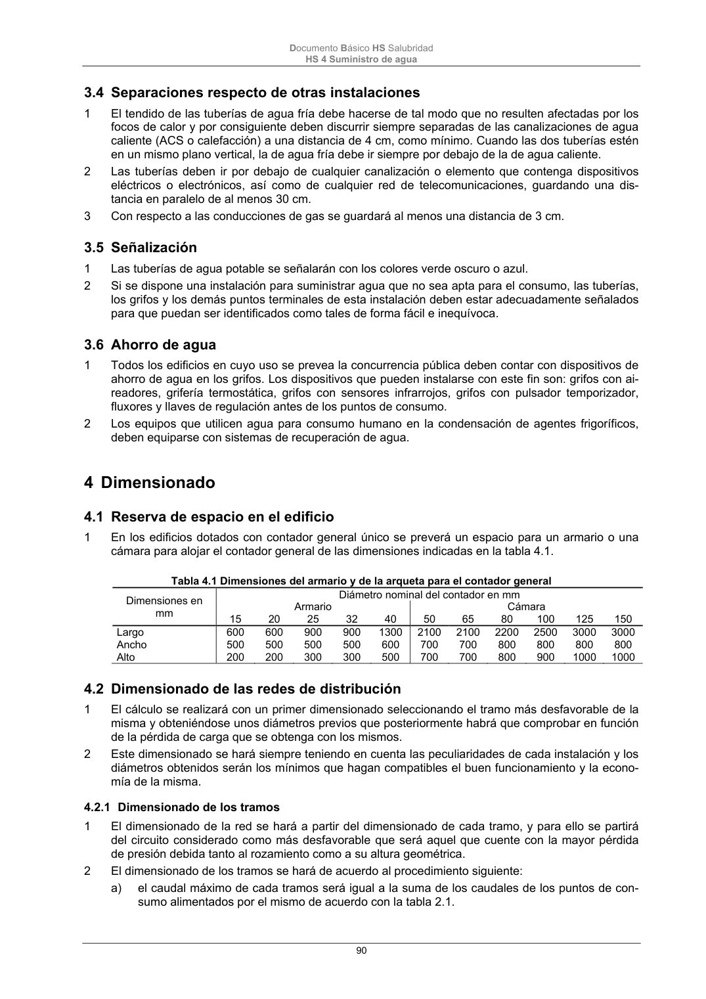

DB-HS Salubridad · edición 2022-06-14 · capa oficial
Documento DB-HS-oficial · SHA-256 del PDF 68df3caacc95f71aee2ec1ba7b2c65ae66155c21e3a8785521b8fdd4fd640d3b
Copia fiel del PDF fuente · Fuente oficial
Ficha de la disposición en la fuente oficial
Formatos: JSON del segmento · Markdown
3.3.6 Grupos motobomba 1 Las bombas no deben conectarse directamente a las tuberías de llegada del agua de suministro, sino que deben alimentarse desde un depósito, excepto cuando vayan equipadas con los disposi- tivos de protección y aislamiento que impidan que se produzca depresión en la red. 2 Esta protección debe alcanzar también a las bombas de caudal variable que se instalen en los grupos de presión de acción regulable e incluirá un dispositivo que provoque el cierre de la as- piración y la parada de la bomba en caso de depresión en la tubería de alimentación y un depósito de protección contra las sobrepresiones producidas por golpe de ariete. 3 En los grupos de sobreelevación de tipo convencional, debe instalarse una válvula antirretorno, de tipo membrana, para amortiguar los posibles golpes de ariete. Documento Básico HS Salubridad HS 4 Suministro de agua 90
